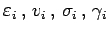
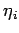
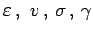
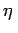
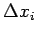

Absoluter und relativer Fehler
- 1. Absolute Unsicherheit, absoluter Fehler:
- Die Unsicherheit eines Meßergebnisses, angegeben als Fehler  oder  bzw.  oder , ist ein Maß für die Zuverlässigkeit der Messungen. Der Begriff der absoluten Unsicherheit, angegeben als absoluter Fehler, steht für alle diese Fehlergrößen und die ihnen entsprechenden Ergebnisse von Fehlerfortpflanzungsrechnungen. Sie zeichnen sich durch die gleiche Dimension aus wie die zu messende Größe. Der absolute Fehler wurde eingeführt, um Verwechslungen mit dem Begriff des relativen Fehlers zu vermeiden. Als Formelzeichen wird häufig  bzw.
 verwendet. Das Wort ,,absolut`` hat hier eine andere Bedeutung als im Begriff Absolutwert: Es bezieht sich lediglich auf den Zahlenwert der Meßgröße (z.B. Länge, Ladung, Energie), ohne auf ihr Vorzeichen Bezug zu nehmen.
verwendet. Das Wort ,,absolut`` hat hier eine andere Bedeutung als im Begriff Absolutwert: Es bezieht sich lediglich auf den Zahlenwert der Meßgröße (z.B. Länge, Ladung, Energie), ohne auf ihr Vorzeichen Bezug zu nehmen.
- 2. Relative Unsicherheit, relativer Fehler:
- Die relative Unsicherheit, angegeben durch den relativen Fehler, ist ein Maß für die Qualität der Messungen, bezogen auf den Zahlenwert der Meßgröße im oben definierten Sinne. Im Unterschied zum absoluten Fehler ist der relative Fehler dimensionslos, weil er als Quotient aus dem absoluten Fehler und dem Zahlenwert der Meßgröße gebildet wird. Ist letzterer nicht bekannt, dann setzt man den Mittelwert der Meßgröße x ein:
Der relative Fehler wird meist in Prozenten angegeben und heißt daher auch prozentualer Fehler: